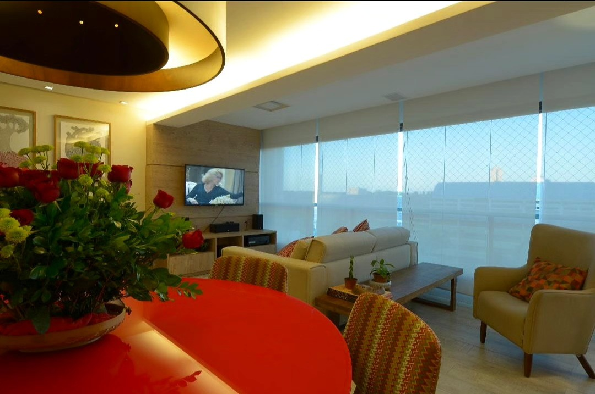
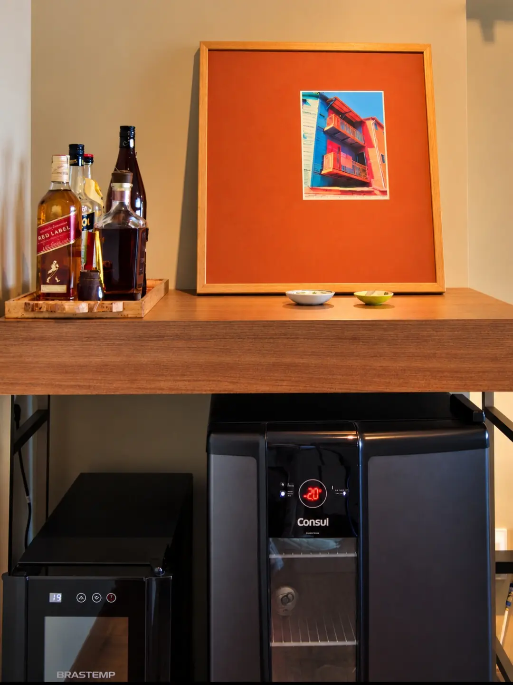
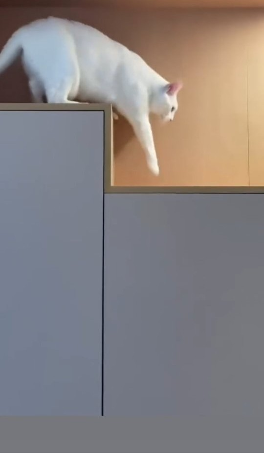
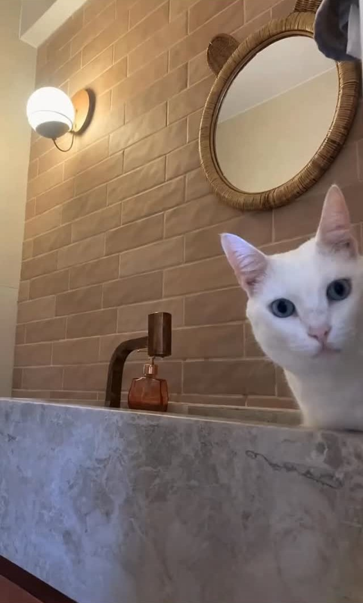

Rio Vermelho, Salvador
Rio Vermelho
Trocamos o piso existente, as cores do apartamento e fizemos uma marcenaria personalizada para atender as necessidades das moradoras.
Ver o projeto
projeto, obra e decoração
Arquitetura de interiores em Salvador, desde 2004.
O retrato da alma brasileira
[ Desde 2004 ]
Reforma de apartamentos pensada a partir de quem mora ali: os livros, os discos, o artesanato, os bichos.
“Tem coisas que não foram escolhidas para combinar. Foram escolhidas porque contam alguma coisa.”




Rio Vermelho, Salvador
Trocamos o piso existente, as cores do apartamento e fizemos uma marcenaria personalizada para atender as necessidades das moradoras.
Ver o projeto
cada título, uma lembrança
Uma casa sem livros pode ser bonita. Mas uma casa com livros tem alma.
Ver o projeto
madeira, cerâmica, feito à mão
O luxo de um interior está nisso: não parecer que foi comprado inteiro de uma vez.
Ver o projeto
azul + madeira
Azul e madeira. Uma combinação que poderia ser previsível, mas aqui ganhou outra conversa.
Ver o projeto
um refúgio urbano
A textura suave do linho, o toque natural da madeira e o frescor do verde.
Ver o projeto[ Projetos ]
[ Como trabalho ]
Entender quem mora, o que fica e o que muda. Medir o apartamento e desenhar as primeiras ideias.
O caderno que a obra segue: plantas construtivas, de gesso, de paginação de revestimentos e com os pontos elétricos e luminotécnicos.
Visitas ao local para checar se tudo acontece conforme o projeto e tirar as dúvidas da equipe.
Depois da reforma, quadros, almofadas e flores entram no lugar para deixar o ambiente aconchegante.
Prazos, valores e o que trazer na primeira conversa: o guia do cliente

[ Pra quem mora ]
Uma estante pensada não apenas como estante, mas como diversão para os gatos. Antes do projeto, a casa: conte a sua em seis perguntas.
Conte a sua casa
Quando me formei, em 2004, eu imaginava que minha profissão seria feita de projetos. Com o tempo descobri que ela é feita de encontros.
Escritório de uma pessoa só: da primeira conversa à última almofada, quem desenha é quem atende.
[ Perguntas ]
O caderno que a obra segue: plantas construtivas, de gesso, de paginação de revestimentos e com os pontos elétricos e luminotécnicos. Depois, o acompanhamento da obra e a decoração.
Sim. São visitas ao local para checar se tudo acontece conforme o projeto e tirar as dúvidas da equipe.
Em Salvador. O escritório fica na Rua Aracaju, 34, na Barra.
Pelo WhatsApp, com a própria Débora. Se preferir, conte a sua casa antes: ela recebe o retrato e já chega na conversa sabendo do que você precisa.
[ Contato ]
Conte um pouco da sua casa. A conversa começa com a própria Débora.